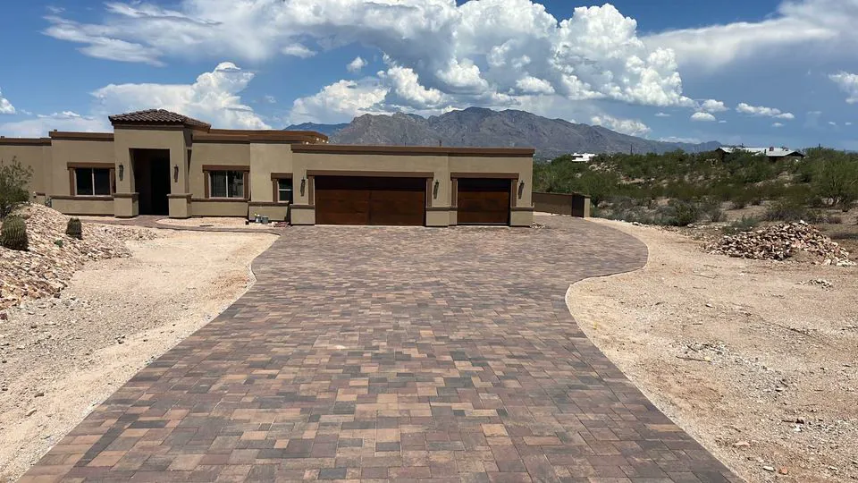
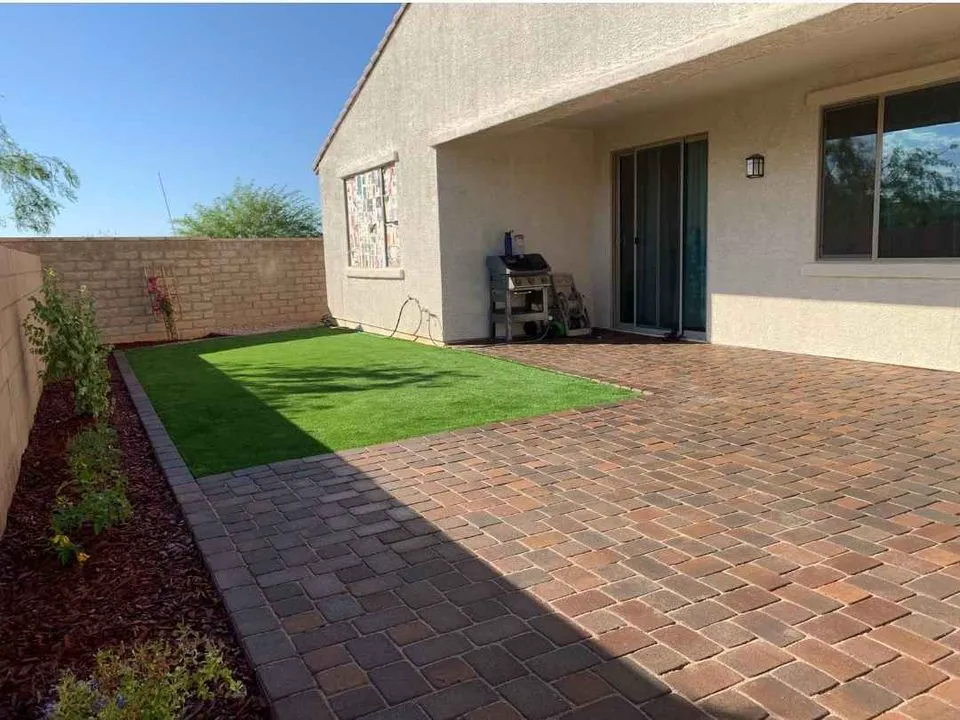
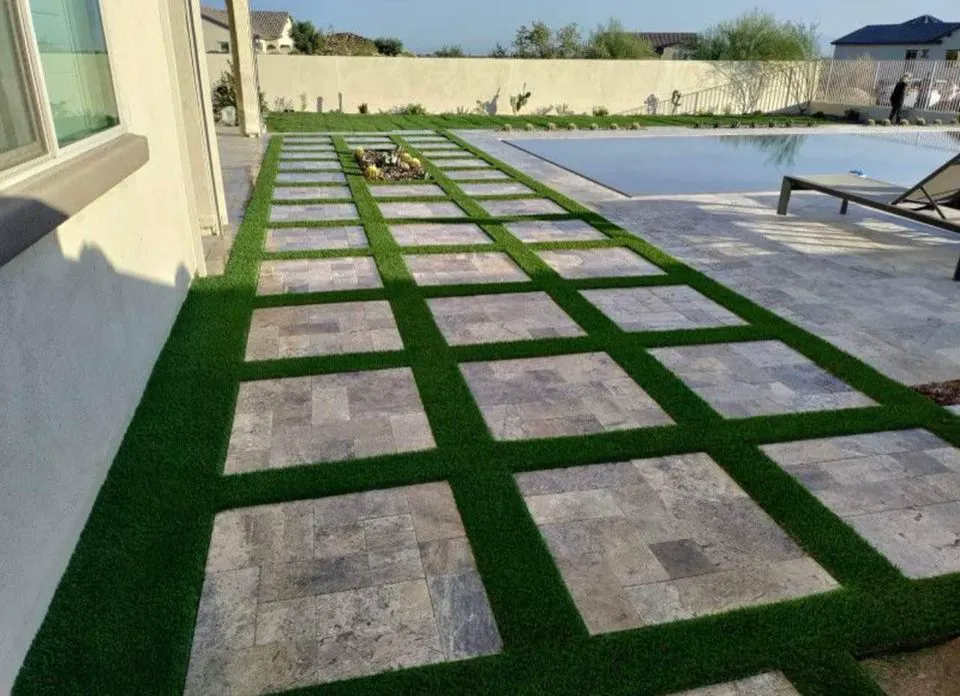
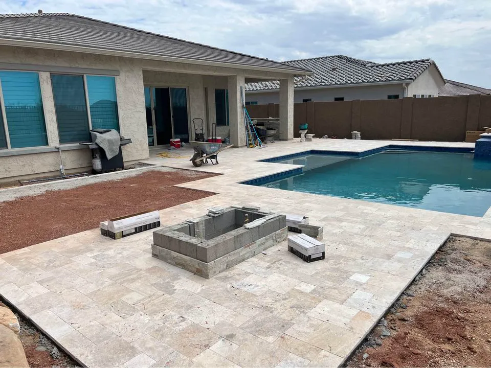

Paver installer in Scottsdale, AZ
Pavers give a driveway, patio or pool deck a finished, layered look. Scottscrete Concrete Contracting installs concrete, brick and natural stone pavers, including travertine, in Scottsdale, Phoenix, Cave Creek and Paradise Valley.

- Licensed, insured and bonded
- Free quote on site
- 5.0 on Google, 24 reviews
What's included.
A paver surface is only as good as what is under it. A compacted base and level bedding keep pavers from sinking or shifting, and desert sun makes color and material choice matter. Pavers can be lifted and reset if a section settles, which is one reason people choose them.
- Concrete pavers in a range of colors and textures
- Brick pavers with classic, earthy color variation
- Natural stone pavers such as travertine and sandstone
- Paver driveways
- Paver patios
- Paver pool decks, including travertine
- Paver paths and walkways
How we do it.
-
Choose the material
We talk through concrete, brick or natural stone, and where the pavers will go.
-
Prepare the base
Excavate and compact a base, and set the grade so water drains away.
-
Lay the pavers
Set the pavers to the pattern and edges you picked.
-
Finish
Fill and compact the joints. Sealing every few years helps protect color and keep stains out.
When to call us.
If any of these sound familiar, the sooner someone looks at it the cheaper it usually is to fix.
- You want a driveway or patio with a stone or brick look
- Your pool deck is too hot or too slippery
- Your existing pavers have sunk, shifted or faded
- You want a path that connects parts of the yard
Recent work.



Pavers questions.
Are paver driveways more durable than concrete?
Pavers can flex slightly, which reduces cracking from movement, as long as the base is prepared and compacted correctly.
How do I maintain pavers in Scottsdale?
Sweep debris, rinse with water, and reseal every few years to protect against sun and weather exposure.
Are travertine pavers good for pool decks?
Yes. Travertine stays cooler underfoot and has a natural grip, which makes it a popular pool deck choice in hot climates.
How long does installation take?
It depends on the size and complexity, but most installations take a few days. Your timeline is set at the consultation.
Ready to install pavers?
Call us, or send the details and we'll call you to set up an on-site estimate.